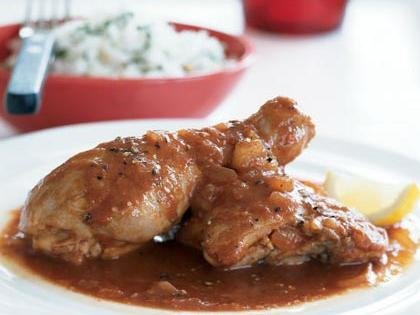

Inyama yenkhukhu (Chicken Casserole)
This is a flavorful chicken stew recipe.
Ingredients:
- 2 chicken breast halves, skinned.
- 2 chicken thighs, skinned
- 2 drumsticks, skinned
- 3 tablespoons fresh lemon juice
- 3/4 teaspoon of salt/li>
- One cup chopped onion
- 1 tablespoon minced garlic
- 60 ml cooking oil
Method:
- Place chicken in a shallow dish
- Heat oil and fry chicken until golden brown
- Add onions and garlic and cook for five minutes
- Simmer gently for 45 minutes or until cooked through.
- Thicken casserole with flour mixed with a bit of cold water.